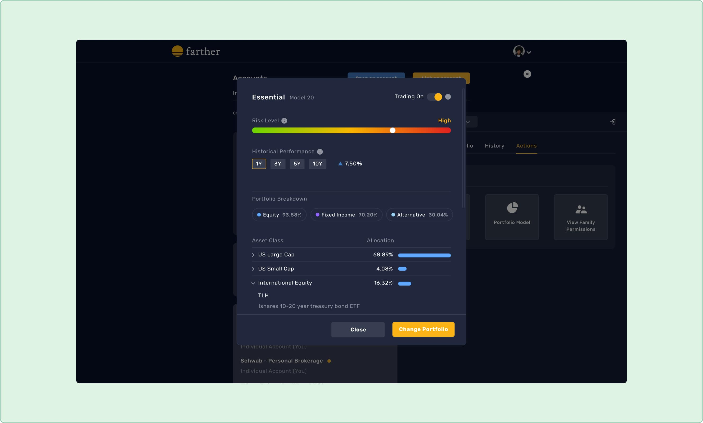
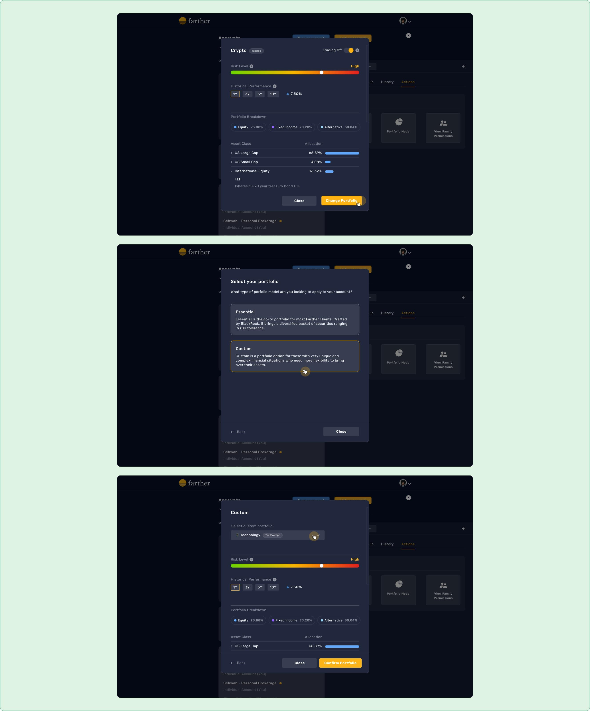
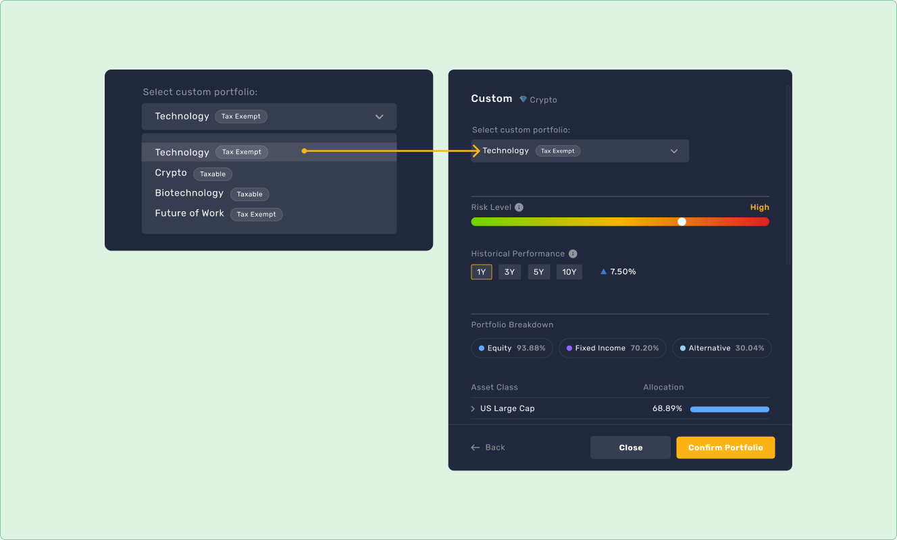

I redesigned the portfolio model flow on Farther’s wealth management platform, used by their financial advisors and clients. As the lead designer, I collaborated with four engineers in a three-week iterative process.

Problem
At the time, the portfolio model flow was clunky and difficult to navigate, despite being one of the heavily utilized flows for Advisors.
Hypothesis
If we simplify the steps, make data interactive, and provide detailed information, this would lead to users making data-informed decisions and increasing Farther’s AUM (Assets Under Management).
Solution
I simplified the portfolio model flow to help Advisors and Clients make informed investment decisions through a comprehensive selection process.
Outcome
42+ Advisors select portfolio models for their clients
3.7% increase in AUM since the update
The Process
Legacy flows meet a tripled advisor team
We reached a crucial point in Father’s journey. Our Advisor team tripled, signaling an expansion in our operations. With this growth came the realization that our MVP flows within the Farther platform were due for an upgrade,particularly the process of selecting portfolio models by Advisors or clients.
Unveiling our audience: who’s steering the ship?
It was essential to define our target user early on. We commonly referred to our user personas, representing our target audience and their investment approach:
John is a seasoned advisor with deep client relationships, managing all their investments.
Sarah is a tech-savvy young professional who prefers a hands-on approach to investment management.
When I engaged in the user discussions with stakeholders, we leaned on these personas as our guiding lights. Ultimately, we reached a consensus: Advisors would serve as the primary users, however we acknowledged the need to accommodate secondary users.
Uncovering potential solutions through audit
This is where I delve into our current product, identifying problem areas, scoping out technical details as needed, and understanding the intricacies of our system.
During the visual audit, I worked with the designer of the MVP flow, probing into the rationale behind past decisions. Drawing from these insights, I propose design enhancement for clarity around new and existing data.

Streamlining user journeys
In addition to conducting a visual audit, I mapped the user journey. This enabled me to identify and eliminate redundant screens, as well as rethink the sequence of steps.

Defining the problem
Now that I’ve grasped the problems, at high level:
The flow is redundant and challenging to navigate with the current UI
The UI requires integration of new data
Coming up with the hypothesis
If we simplify the steps, make data interactive, and provide comprehensive details, users can make data-informed decisions, thereby contributing to the growth of Farther’s AUM (Assets Under Management).
Defining the success
With a focus on user experience, we aim for users to effortlessly navigate through the flow, anticipating that it will yield the following outcomes:
New advisors continue to join the team
Farther’s AUM experience exponential growth
Gaining an edge through competitor research
I analyzed competitors to pinpoint opportunities for aligning the Farther’s portfolio model flow with user expectations while also setting us apart in the market.
Drawing from these insights, I made informed assumptions about user behaviors:
Users may inquire about their risk tolerance, usually visualized as a bar scale.
Users may assess asset allocation based on their risk tolerance, usually represented by asset categories and allocation percentages.
Reviewing wireframes sketches
After drawing inspiration from competitor research and honing my vision, I quickly sketch wireframes to ensure the new flow is coherent and contains all necessary data. Once finalized, I present the wireframes to my design team for feedback and refinement.
Collaborative design implementation
During implementation, new considerations prompt scope adjustments and questioning of certain elements as the team interacts with the actual product. This necessitated collaboration between me and the engineers to refine micro-interactions. Some changes included:
Implementing a tagging system to differentiate between Tax Exempted and Taxable custom portfolios.
Determining the minimum and maximum number of asset classes to display, utilizing 7 colors from our branding system to map each asset class to a color.
Defining user interaction with the risk level slider, allowing users to slide it across predefined values.
The Solution
During the project, I collaborated with the engineers to accurately implement the designs. As a startup in continuous production, we focus on user experience by self-testing, gathering user feedback, and making iterative enhancements to ensure our platform meets our target audience's needs.
This solution was launched in 2022 alongside other projects, with these estimated outcomes:
42+ Advisors select portfolio models for their clients
3.7% increase in AUM since the update
My Learnings and future improvments
Engage with users – In retrospect, I could have showcased my early designs to our main users, the Advisors. Eventually, juggling multiple projects and time constraints taught me to find ways to interact with the users, ensuring this step is not missed during heavy production.
Testing amid constraints – While testing and validating ideas for each project would be ideal, it wasn’t feasible during our production-heavy phase. However, overtime, I form hypothesis to guide my design decisions when testing isn’t possible.
Revisiting color – My past excessive use of color in UI design is a lesson learned. After discovering the book “Refactoring UI” by Adam Wathan & Steve Schoger, I’ve adopted a monochromatic scheme for color-intensive UIs. This book now guides my future projects.